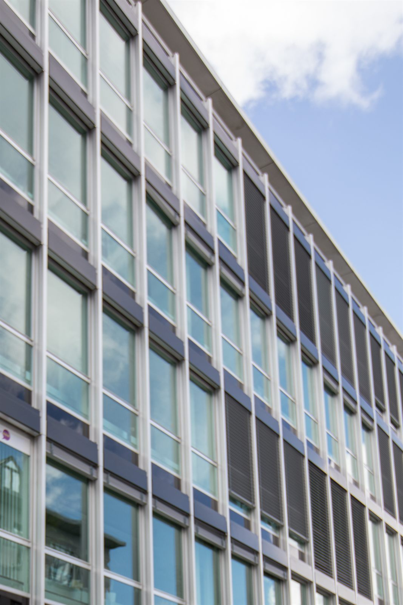

Soziale Gerechtigkeit
Solidarität und Toleranz gegenüber allen Mitmenschen — unabhängig von Herkunft und Religion.
Die Mitte · Stadtparlament Winterthur
Stadtparlamentarier und Präsident der Mitte Bezirk Winterthur. Für eine Stadt, die zusammenhält — mit Bildung, Arbeit, Familie und Sport.

Seit 2019 im Stadtparlament · Kommission Bildung, Sport und Kultur · Wiedergewählt am 8. März 2026 · Legislatur 2026–2030
Solidarität und Toleranz gegenüber allen Mitmenschen — unabhängig von Herkunft und Religion.
Bildung ist unser Rohstoff. Damit die Schweiz innovativ bleibt, müssen wir weiter in sie investieren.
Mehr Raum für Unternehmertum, Startups und die junge Generation in Winterthur.
Wer Erziehungsverantwortung übernimmt, soll finanziell entlastet werden — in Bildung, Sozialvorsorge, Kultur und Sport.
Halt geben, ankommen lassen — etwa mit Tagesstrukturen für in Winterthur ansässige Flüchtlinge.
Gutes Angebot, zeitgemässe Infrastruktur und private Initiativen für neue Sportanlagen.
Persönlich
Karate, Familienküche, Winterthur. Ein paar direkte Antworten — nicht als Wahlkampf, sondern als Person hinter dem Mandat.
«Unsere Gesellschaft lebt nicht nur von eigennützigem Handeln, sondern von der Gemeinschaft, die gepflegt werden muss.»
